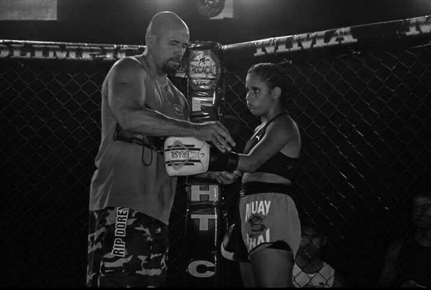

- 
-


MUAY THAI: Arte livre
O Muay Thai, o qual também é conhecido como Thai Boxing em alguns países como Estados Unidos e Inglaterra, é muito conhecido no Brasil como Boxe Tailandês e é uma Arte Marcial Tailandêsa com mais de 2.000 anos de idade.
A origem do Muay Thai confunde-se com a origem do povo Tailandês. Existem várias versões sobre a origem do Muay Thai. A mais aceita pela maioria dos Mestres de Muay Thai e também por vários historiadores Tailandeses é a seguinte:
Segundo os Tailandeses, a origem de seu povo é a província de Yunnam, nas margens do rio Yang Tsé na China Central. Muitas gerações atrás eles migraram da China para o local onde atualmente é à Tailândia em busca de liberdade e de terras férteis para agricultura. Do seu local de origem, a China, até o seu destino, os Tailandeses foram constantemente hostilizados e sofreram muitos ataques de bandidos, de Senhores da Guerra, de animais, e também foram acometidos de muitas doenças. Para protegerem-se e manterem à saúde, eles criaram um método de luta chamado "Chupasart". Este método de luta e auto-defesa fazia uso de diversas armas como por exemplo: espadas, facas, lanças, bastões, escudos, machados, arco e flecha, etc. No treinamento do "Chupasart", freqüentemente ocorriam acidentes que causavam algumas vezes graves ferimentos aos praticantes. Para que eles pudessem treinar sem ferir-se, os tailandeses criaram um método de luta sem armas, o percursor do atual Muay Thai. Assim eles podiam exercitar-se e treinar mesmo em tempos de paz e sem o risco de ferir-se.
No início, o Muay Thai era muito parecido com o Kung Fu Chinês. Um fato normal levando-se em conta à origem do povo Tailandês. O antigo Muay Thai utilizava-se de golpes com as palmas das mãos, ataques com as pontas dos dedos, imobilizações e mãos em garras para segurar o oponente. Com o tempo, ele foi modificando-se e transformou-se no estilo de luta que é hoje.
veja mais aqui: http://www.cbmuaythai.com.br/cf/extra.asp?id=1#.WWjGZCeQwsp
Em breve